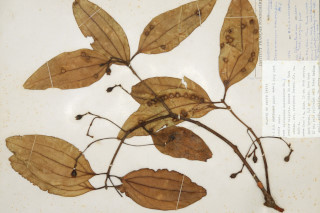
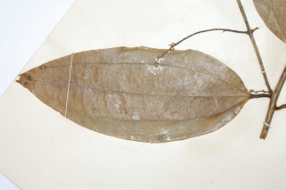
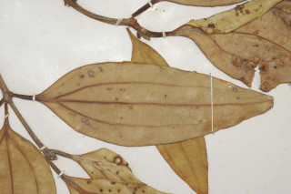
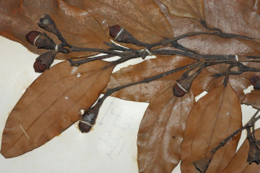

Images :





| Habit : | Trees buttressed , up to 15 m tall. |
| Leaves : | Leaves simple , opposite to subopposite ; petiole stout, 1-2.5 cm long, planoconvex in cross section, glabrous ; lamina 7-18 x 2.5-7.5 cm, ovate to ovate-lanceolate , apex obtuse , base attenuate , coriaceous , glabrous ; trinerved suprabasal , lateral nerves not reaching leaf apex ; midrib raised above; tertiary_nerves horizontally_percurrent ; higher order nerves closely reticulate often obscure . |
| Inflorescence / Flower : | Inflorescence axillary panicles , lax , up to 7 cm long. |
| Fruit and Seed : | Berry , ellipsoid , up to 2.5 cm long; fruiting_calyx cup fleshy, 1.5 cm long with remnants of non-enlarged lobes ; seed 1. |